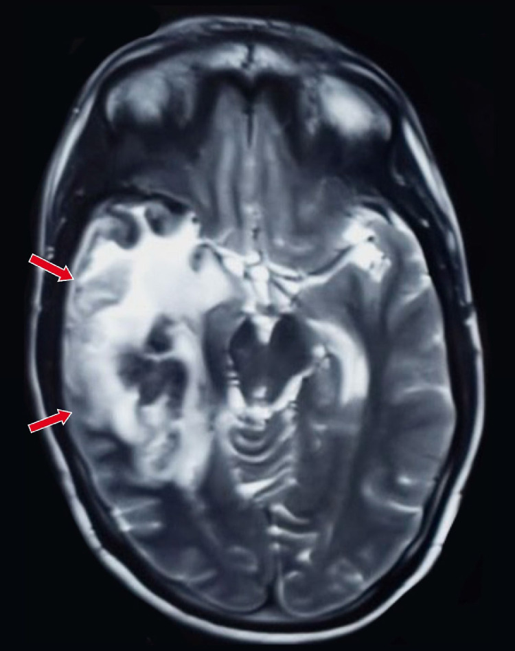
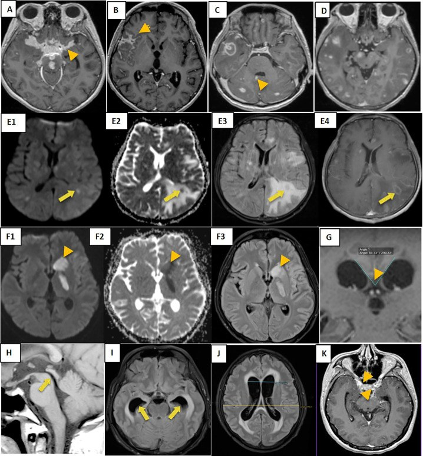
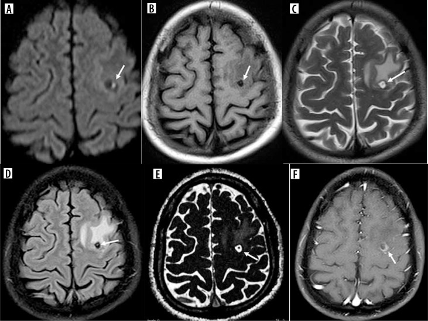
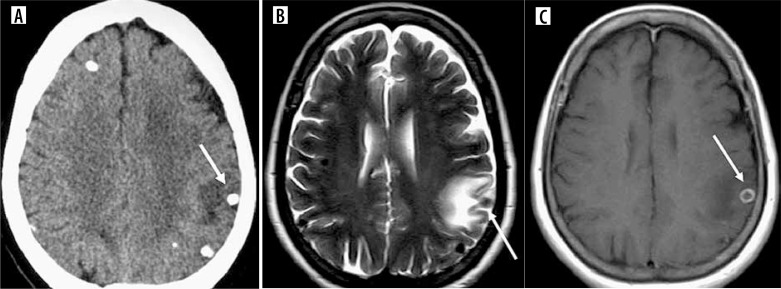
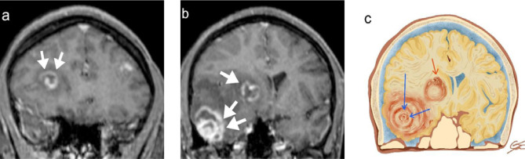
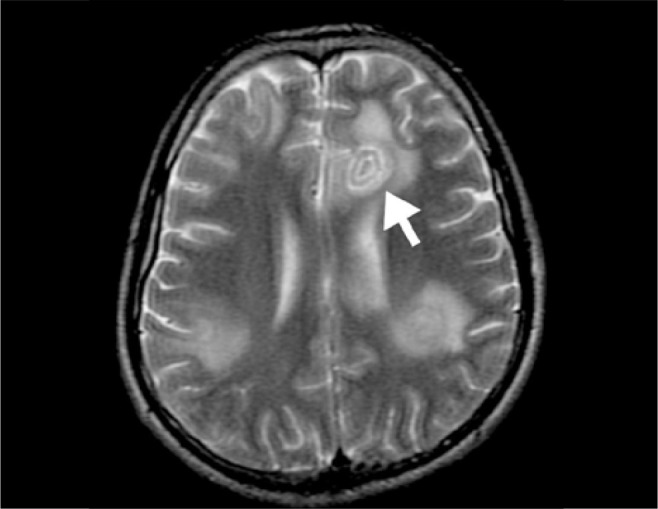

214 — Nhiễm trùng thần kinh trung ương: Herpes, lao, sán, Toxo / CNS infections
Tags: pattern:nhiem-trung-tktw vung:nao protocol:MRI-nhiem-trung
Mức chắc chắn (certainty): tổng hợp y văn (literature synthesis) — nhóm tự biên từ y văn mở, chưa gắn ca nguyên văn đơn lẻ.
1. Tổng quan — virus ưa thái dương + vi khuẩn ưa đáy + ký sinh trùng nang
- Virus Herpes simplex type 1 (HSV-1) đi ngược dây khứu giác/tam thoa vào hệ viền (limbic) — TẠI SAO tổn thương thái dương trong + đảo + hồi đai mà chừa hạch nền: virus lan theo vỏ-limbic, không theo mạch lenticulostriate (khác nhồi máu hạch nền).
- Lao màng não (TB meningitis) đọng đáy (bể nền) → viêm dính + não úng thủy tắc nghẽn + nhồi máu hố sau — TẠI SAO: dịch não tủy (DNT) chảy chậm ở bể nền, trực khuẩn lắng đọng.
- Ngưỡng: DNT lao (protein > 100 mg/dL + đường < 40 mg/dL + lympho) + PCR HSV dương = chốt; acyclovir 10 mg/kg mỗi 8 giờ 14–21 ngày càng sớm càng cứu não.
2. Gamut nhiễm trùng theo vị trí (Gamut)
- Thái dương-đảo 2 bên không đối xứng + chừa hạch nền + sốt: Herpes — acyclovir ngay khi nghi ngờ, đừng chờ PCR.
- Bể nền + não úng thủy + nhồi máu: Lao màng não — kháng lao + corticoid + dẫn lưu não thất.
- Nang đa giai đoạn + vôi hóa: Ấu trùng sán lợn (cysticercosis 4 giai đoạn) — albendazole + steroid.
- Hạch nền đa ổ + HIV + vành lệch tâm: Toxoplasma — cotrimoxazole (khác lymphoma đồng nhất).
3. Bảng so sánh phân biệt (ma trận đối chiếu)
| Thực thể (entity) | Hình ảnh điển hình | Chốt vào (rule-in) | Chốt loại (rule-out) | Gợi ý xác nhận |
|---|---|---|---|---|
| Herpes HSV-1 | Thái dương trong + đảo + hồi đai, CHỪA hạch nền, phù + chảy máu nhẹ | Thái dương-đảo + chừa hạch nền + sốt/mê sảng | Hạch nền hoại tử → nhồi máu/Toxo | PCR HSV DNT + acyclovir 10 mg/kg q8h |
| Lao màng não | Ngấm bể nền + não úng thủy + nhồi máu hố sau | Bể nền + DNT đường thấp + lao phổi | Thái dương chừa hạch nền → Herpes | Cấy/GenXpert DNT + kháng lao |
| Sán lợn 4 giai đoạn | Nang mụn (vesicular) → keo (colloidal) → hạt (nodular) → vôi (calcified) + đầu sán (scolex) | Scolex trong nang + vôi đa ổ + dịch tễ | Vành lệch tâm hạch nền + HIV → Toxo | ELISA sán + albendazole + steroid |
| Toxoplasma | Đa ổ hạch nền + vành lệch tâm (eccentric target) | HIV + CD4 < 100 + vành lệch tâm | Đồng nhất quanh thất → lymphoma | Kháng thể Toxo + cotrimoxazole thử |

Tăng tín hiệu T2 thái dương + phù + hiệu ứng khối, chừa hạch nền. Nguồn: Chadha et al., Radiol Case Rep 2025 Fig. 1, CC BY-NC-ND 4.0 (giữ nguyên bản).
Chùm hình lao màng não (người lớn): (A) ngấm màng não bể nền; (B) ngấm khe Sylvius; (C) ngấm màng não thất; (D) tuberculoma đơn/đa; (E) lao giả áp-xe (pseudo-abscess) với ngấm vòng; (F) nhồi máu hạch nền do viêm mạch; (H–K) biến chứng não úng thủy tắc nghẽn. Nguồn: Dian S et al., PLoS One 2020 (PMC7665695), CC BY 4.0.
*Giai đoạn keo (colloidal): nang giảm tín hiệu trên DWI/T1 (A,B) + đầu sán (scolex) tăng tín hiệu bên trong; nang T2 tăng + viền giảm tín hiệu (C). Nguồn: Goddu Govindappa SK et al., Pol J Radiol 2024 (PMC11705042), CC BY-NC-ND 4.0 (giữ nguyên bản).*
*Giai đoạn vôi hóa (calcified): (A) CT nốt vôi hóa kèm phù quanh ở vỏ đỉnh trái; (B) T2 cùng ca cho nốt giảm tín hiệu (mũi tên); (C) T1 sau tiêm — viền ngấm mảnh. Nguồn: Goddu Govindappa SK et al., Pol J Radiol 2024 (PMC11705042), CC BY-NC-ND 4.0 (giữ nguyên bản).*
Toxoplasma (AIDS): T1 sau tiêm (a,b) nhiều tổn thương ngấm vòng với "đích lệch tâm" (eccentric target sign) — cấu trúc ngấm lệch về một phía thành nang; (c) sơ đồ minh họa. Nguồn: Tiradentes PHA et al., Radiol Bras 2026 (PMC13317705), CC BY 4.0.
Dấu "đích đồng tâm" (concentric target sign) trên T2 — tổn thương ở hồi đai trái (mũi tên) với vòng đồng tâm; gặp ở Toxoplasma nhưng kém đặc hiệu hơn "đích lệch tâm". Nguồn: Tiradentes PHA et al., Radiol Bras 2026 (PMC13317705), CC BY 4.0.4. Protocol
- MRI + gadolinium + DWI + PCR DNT khi sốt + rối loạn ý thức + co giật (đừng chụp CT rồi về).
- Nghi Herpes: acyclovir ngay + levetiracetam dự phòng co giật; lao: chọc DNT đo áp lực + đường/protein + GenXpert.
flowchart TD
A[Sốt + mê sảng + co giật] --> B{Thái dương chừa hạch nền?}
B -->|Có| C[Herpes: acyclovir + PCR]
B -->|Không| D{Bể nền + úng thủy?}
D -->|Có| E[Lao: kháng lao + DNT]
D -->|Không| F{Nang/vôi/HIV?}
F -->|Có| G[Sán/Toxo theo CD4]
5. Cạm bẫy
- Chờ PCR mới cho acyclovir = não chết thêm mỗi giờ — cho ngay khi nghi ngờ lâm sàng + MRI.
- Lao gọi nhầm u/meningioma bể nền → mổ vô ích — DNT + lao cũ trước mổ.
- Sán vôi hóa giả u vôi/CMV bẩm sinh — scolex + dịch tễ + không phù là chốt.
6. Tự lượng giá — Blind Quiz
Ca 1 — Sốt + loạn thần cấp 7 ngày, không đáp ứng haloperidol. Đọc T2.
- Hỏi: tổn thương đâu? Chừa cấu trúc nào? Thuốc nào cho ngay?
Bấm để hiện đáp án
- Dấu hiệu (findings): tăng T2 thái dương-phải lan đảo-trán + phù, chừa hạch nền.
- Chẩn đoán (diagnosis): viêm não Herpes — acyclovir 10 mg/kg q8h ngay + PCR DNT (đừng chờ).
- Nguồn: Chadha et al., Fig. 1, CC BY-NC-ND 4.0 (nguyên bản).
Ca 2 — Sốt kéo dài, đau đầu, gáy cứng, tổn thương phổi cũ; nhìn chùm ảnh MRI:
- Gợi ý lâm sàng (clinical context): sốt kéo dài, đau đầu, cứng gáy, có thể liệt dây thần kinh sọ.
- Câu hỏi: (A–C) ngấm ở đâu? (D,E,F) tổn thương nhu mô là gì? (H–K) biến chứng? Xét nghiệm chốt?
Bấm để hiện đáp án
- Dấu hiệu (findings): ngấm màng não bể nền (A), khe Sylvius (B), màng não thất (C); tuberculoma (D) và lao giả áp-xe (pseudo-abscess, E) ngấm vòng; nhồi máu hạch nền (F) do viêm mạch; não úng thủy tắc nghẽn (H–K) do viêm dính bể nền.
- Chẩn đoán (diagnosis): lao màng não (tuberculous meningitis) — chốt bằng DNT (protein > 100 mg/dL + glucose < 40 mg/dL + lympho) + GenXpert/cấy lao; điều trị kháng lao + corticoid, dẫn lưu khi úng thủy.
- Nguồn ảnh: Dian S et al., PLoS One 2020 (PMC7665695), CC BY 4.0.
Ca 3 — Co giật + tiền sử ăn thịt lợn gạo/từng mắc sán; nhìn MRI (DWI/T1) và CT:
- Câu hỏi: Hai ảnh thuộc hai giai đoạn nào của sán lợn? Dấu hiệu chốt trên mỗi ảnh? Điều trị kèm gì để tránh phù não?
Bấm để hiện đáp án
- Dấu hiệu (findings): (a) giai đoạn keo: nang giảm tín hiệu DWI/T1 + đầu sán (scolex) tăng tín hiệu bên trong, T2 tăng + viền tối; (b) giai đoạn vôi hóa: CT nốt vôi + phù quanh, T2 nốt giảm tín hiệu; viền ngấm mảnh trên T1 sau tiêm.
- Chẩn đoán (diagnosis): sán lợn (neurocysticercosis) đa giai đoạn (vesicular → colloidal → granular-nodular → calcified). Điều trị albendazole + CORTICOID (steroid) để hạn chế phù khi nang thoái hóa; scolex trong nang là dấu hiệu đặc hiệu.
- Nguồn ảnh: Goddu Govindappa SK et al., Pol J Radiol 2024 (PMC11705042), CC BY-NC-ND 4.0 (giữ nguyên bản).
Ca 4 — HIV, CD4 60, đa ổ ngấm vòng; nhìn 2 ảnh:
- Câu hỏi: hai dấu "đích" này thuộc bệnh nào? Dấu nào đặc hiệu hơn? Phân biệt với lymphoma? Điều trị thử?
Bấm để hiện đáp án
- Dấu hiệu (findings): nhiều tổn thương hạch nền ngấm vòng; (a) "đích lệch tâm" (eccentric target) trên T1 sau tiêm — đặc hiệu hơn cho Toxo; (b) "đích đồng tâm" (concentric target) trên T2 — kém đặc hiệu.
- Chẩn đoán (diagnosis): Toxoplasma não (toxoplasmic encephalitis) — đa ổ hạch nền + vành ngấm/đích lệch tâm ở bệnh nhân CD4 < 100; điều trị thử cotrimoxazole 2 tuần; lymphoma quanh thất đồng nhất, ADC cực thấp, đáp ứng steroid. Để dè chừng: dấu đích không tuyệt đối đặc hiệu, cần bối cảnh HIV/CD4.
- Nguồn ảnh: Tiradentes PHA et al., Radiol Bras 2026 (PMC13317705), CC BY 4.0.
Bài liên quan chéo
- 200 – Tổng quan Thần kinh
- 213 – U não (áp-xe vs GBM vs lymphoma)
- 211 – Đột quỵ não (nhồi máu vs Herpes)
- 219 – PRES & RCVS (viêm não HSV & lao là DDx của phù não sau; phân biệt phù mạch máu vs nhiễm trùng)
Ảnh
images/214_herpes-thai-duong_T2_PMC-Chadha-CCBYNCND40.jpg— Herpes thái dương-đảo (CC BY-NC-ND 4.0, giữ nguyên bản).images/214_lao-mang-nao_MRI_PMC7665695-Fig1-CCBY.jpg— lao màng não: ngấm bể nền, tuberculoma, giả áp-xe, úng thủy (CC BY 4.0).images/214_san_MRI_PMC11705042-Fig11-colloidal-CCBYNCND.jpg— sán giai đoạn keo + đầu sán (CC BY-NC-ND 4.0, giữ nguyên bản).images/214_san_CT-MRI_PMC11705042-Fig14-calcified-CCBYNCND.jpg— sán giai đoạn vôi hóa trên CT + MRI (CC BY-NC-ND 4.0, giữ nguyên bản).images/214_toxo_MRI_PMC13317705-Fig4-lech-tam-CCBY.jpg— Toxo: dấu đích lệch tâm (CC BY 4.0).images/214_toxo_MRI_PMC13317705-Fig5-dong-tam-CCBY.jpg— Toxo: dấu đích đồng tâm (CC BY 4.0).- Nguồn + giấy phép đầy đủ:
images/CREDITS.md; link gốc:sources.md.
Không dùng để chẩn đoán độc lập khi chưa có người hướng dẫn.